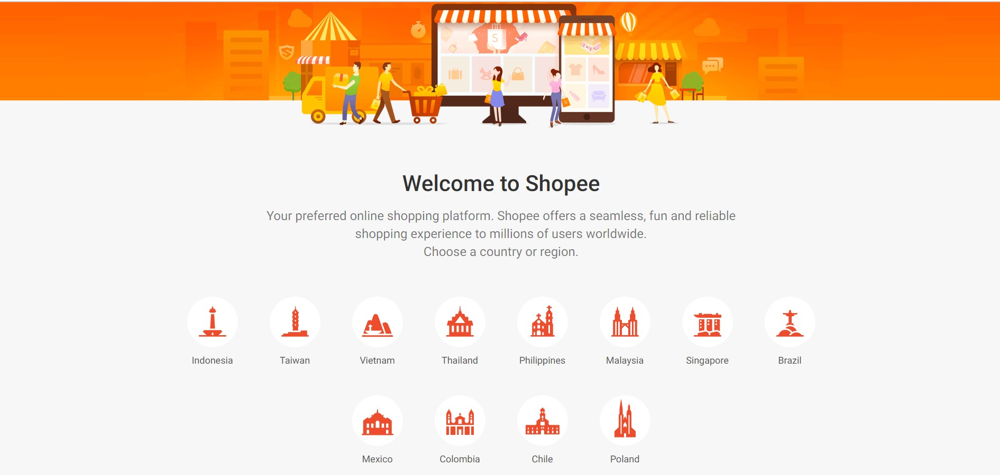
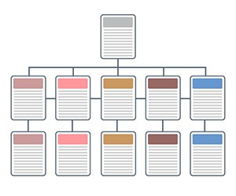

| ความหมายของเว็บไซต์ |
เว็บไซด์ (Website) หมายถึง แหล่งเก็บเว็บเพจ (Webpage) ที่ผู้ใช้บริการสามารถเรียกดูเว็บเพจที่เก็บอยู่ในเว็บไซต์นั้นได้โดยเว็บไซต์จะประกอบด้วยหน้าเว็บเพจหลายหน้า ซึ่งเชื่อมโยงกันผ่านทางไฮเปอร์ลิงก์ (Hyperink) ส่วนใหญ่จัดทำขึ้นเพื่อนำเสนอข้อมูลผ่านคอมพิวเตอร์ โดยถูกจัดเก็บไว้ในเวิลด์ไวด์เว็บ (World Wideweb : www) หน้าแรกของเว็บไซต์ที่เก็บไว้ที่ชื่อหลักเรียกว่า โฮมเพจ (Homepage) เว็บไซด์โดยทั่วไปจะให้บริการแก่ผู้ใช้ฟรีแต่ในขณะเดียวกันบางเว็บไซค์จำเป็นต้องมีการสมัครสมาชิกและเสียค่าบริการเพื่อที่จะดูข้อมูลในเว็บไซต์นั้น เช่น ข้อมูลทางวิชาการ ข้อมูลตลาดหลักทรัพย์ หรือข้อมูลสื่อต่าง ๆ ผู้ทำเว็บไซค์มีหลายระดับตั้งแต่สร้างเว็บไซด์ส่วนตัว จนถึงระดับเว็บไซต์สำหรับธุรกิจหรือองค์กรต่าง ๆ การเรียกดูเว็บไซโดยทั่วไปนิยมเรียกดูผ่านซอฟต์แวร์ในลักษณะของเว็บเบราว์เซอร์
|
|
ภาพที่ 1.1 เว็บไซต์ (Website)
ที่มา : https://bit.ly/3wPrdt3 |
| ความหมายของเว็บเบราว์เซอร์ |
เว็บเบราว์เซอร์ (Web Browser) หมายถึง โปรแกรมที่ใช้ในการเข้าสู่เวิลด์ไวด์เว็บ และเปิดดูเว็บเพจที่เก็บอยู่ในเว็บไซด์ต่าง ๆ ตัวอย่างเว็บเบราว์เซอร์ที่นิยมใช้ เช่น Google Chrome, Firefox, Internet Explorer, Microsoft Edge, Safari และ Opera ฯลฯ
|
|
ภาพที่ 1.2 เว็บเบราว์เซอร์ (Web Browser)
ที่มา : https://bit.ly/3u7eIHH
|
| ศัพท์ที่เกี่ยวข้อง |
| 1. เวิลด์ไวด์เว็บ (World Wide Web) นิยมเรียกสั้น ๆ ว่า เว็บ (Web) มีชื่อย่อว่า www คือ บริการเครือข่าย ใยแมงมุมบนอินเทอร์เน็ต ซึ่งเกิดขึ้นเพื่ออำนวยความสะดวกให้แก่ผู้ที่ใช้งานเครือข่ายอินเทอร์เน็ต ทำให้ผู้ใช้งานไม่จำเป็นต้องจำคำสั่งยูนิกซ์ (Unix) ในการคันหาข่าวสารและสารสนเทศต่าง ๆ ตามที่ต้องการ
2. โฮมเพจ (Homepage) หมายถึง หน้าแรกของเว็บไซด์ เปรียบเสมือนหน้าสารบัญของหนังสือ โฮมเพจส่วนไหจะประกอบด้วยเนื้อหาที่เชื่อมโยงหรือแสดงว่ามีการให้บริการอะไรบ้าง ซึ่งโฮมเพจนี้จะบันทึกไฟล์ส่วนใหญ่เป็นซี้ง index.hml เสมอ เพราะเป็นมาตรฐานสากล โดยเบราว์เซอร์ต่าง ๆ จะเข้าใจว่า ชื่อนี้เป็นหน้าแรกเสมออินเทอร์เน็ตไม่จำเป็นต้องพิมพ์ชื่อไฟส์เมื่อต้องการเข้าสู่เว็บไซต์หนึ่ง ๆ ตัวอย่างเช่น ww.shopee.com ไม่ต้องพิมพ์ https:/ishopee.comindex.html ฯลฯ
|
|  |
ภาพที่ 1.3 Shopee
ที่มา : https://shopee.com/index.html
|
3. เว็บเพจ (Webpage)หมายถึง แต่ละหน้าของเว็บไซต์ประกอบด้วย ข้อความ รูปภาพ เสียง ภาพเคลื่อนไหว วิดีโอ และจะบันทึกไฟล์เป็นนามสกุล .html เปรียบเสมือนแต่ละหน้าของหนังสือ เมื่อรวมกันทุกหน้า เรียกว่า เว็บไซต์ (Website)
4. อินเทอร์เน็ต (Internet) มาจากคำเต็มว่า International Network เป็นระบบเครือข่าย (Network) ที่เชื่อมโยงเครือข่ายหลากหลายเครือข่ายเข้าด้วยกัน อินเทอร์เน็ตจึงเป็นแหล่งข้อมูลขนาดใหญ่ที่มีข้อมูลในทุก ๆ ด้าน ให้ผู้ที่สนใจเข้าไปศึกษาคันคว้าหรือแลกเปลี่ยนความรู้ได้อย่างสะดวก รวดเร็ว
|
|
ภาพที่ 1.4 อินเทอร์เน็ต (Internet)
ที่มา : https://bit.ly/3i7Peal
|
| 5. ชื่อโดเมน (Domain Name) หมายถึง ชื่อที่ถูกเรียกแทนการเรียกเป็นหมายเลขอินเทอร์เน็ต (IP Address) ซึ่ง IP Address นั้นจะได้จากการใช้บริการเว็บโฮสติ้ง หรือพื้นที่เว็บไซต์ เนื่องจากการจดจำหมายเลข IP ถึง 16 หลัก ทำให้ยุ่งยากและไม่สามารถจำได้เมื่อเข้าใช้บริการในระบบอินเทอร์เน็ต จึงนำชื่อที่เป็นตัวอักษรมาใช้แทน ซึ่งมักจะเป็นชื่อที่สื่อความหมายถึงหน่วยงาน วัตถุประสงค์ เนื้อหา หรือเจ้าของเว็บไซต์นั้นๆ โดยแต่ละเว็บไซต์จะมีชื่อโดเมนเฉพาะที่ไม่ซ้ำกัน
|
|
ภาพที่ 1.5 โดเมนเนม (Domain Name)
ที่มา : https//bit.ly/34t3gvs
|
| หลักที่ใช้ในการตั้งซื่อได้เมน |
1) ความยาวของชื่อโดเมนตั้งได้ไม่เกิน 63 ตัวอักษร
2) สามารถใช้ตัวอักษรภาษาอังกฤษผสมกับตัวเลข หรือเครื่องหมายขีด (-) ได้
3) ตัวอักษรภาษาอังกฤษ ตัวเล็กหรือตัวใหญ่ ถือว่าเหมือนกัน
4) ห้ามใช้เครื่องหมายขีด (-) นำหน้าชื่อโตเมน แต่สามารถใช้ในระหว่างคำได้
5) ห้ามเว้นวรรดในชื่อโดเมน
6) การตั้งชื่อโดเมนควรสื่อถึงความหมายของเว็บไซด์ให้มากที่สุด เนื่องจากมีต่อการจัดสำดับเว็บไซต์ในลำดับตัน ๆ ที่เรียกว่า Search Engine Optimization (SEO)
ประเภทของชื่อโดเมน
1) โดเมน 2 ระดับ ชื่อโดเมน , ประเภทของโดเมน
2) โดเมน 3 ระดับ ชื่อโดเมน . ประเภทของโดเมน , ประเทศ
ชื่อโดเมน 2 ระดับ ประกอบด้วย
www. ชื่อโดเมน , ประเภทของโดเมน เช่น www.sanook.com ประเภทของโดเมน คือ คำย่อขององค์กร โดยประเภทขององค์กรที่พบบ่อย มีดังต่อไปนี้
.com คือ บริษัทหรือองค์กรพาณิชย์ (Company)
.net คือ องค์กรที่เป็นเกตเวย์หรือจุดเชื่อมต่อเครือข่าย (Network)
.org คือ องค์กรเอกชนที่ไม่แสวงผลกำไร (Organization)
.edu คือ สถาบันการศึกษา (Education)
.gov คือ องค์กรของรัฐบาล (Government)
ชื่อโดเมน 3 ระดับ ประกอบด้วย
www. ชื่อโดเมน . ประเภทของโดเมน, ประเทศ เช่น www.chula.ac.th , www.google.co.th ประเภทขององค์กรที่พบบ่อย มีดังต่อไปนี้
.co คือ บริษัทหรือองค์กรพาณิชย์ (Company)
.ac คือ สถาบันการศึกษา (Education)
.go คือ องค์กรของรัฐบาล (Government)
.net คือ องค์กรที่ให้บริการเครือข่าย (Network)
.or คือ องค์กรเอกชนที่ไม่แสวงผลกำไร (Organization)
ตัวย่อของประเทศที่ตั้งขององค์กร ตัวอย่างเช่น
.th คือ ประเทศไทย
.cn คือ ประเทศจีน
.uk คือ ประเทศอังกฤษ
.jp คือ ประเทศญี่ปุ่น
.au คือ ประเทศออสเตรเลีย
6.โฮสติ้ง (Hosting)
เว็บโฮสติ้ง (Web Hosting) คือรูปแบบการให้บริการที่อนุญาตให้ผู้ใช้บริการสามารถนำเว็บเพจของตนเองเพื่อใช้งานออนไลน์บนอินเทอร์เน็ตได้ ซึ่งเว็บโฮสติ้งนี้มีอีกชื่อหนึ่งว่า HSP ย่อมาจาก Hosting Service Provider หรือผู้ให้บริการโฮสติ้ง เป็นธุรกิจที่นำเอาเทคโนโลยีที่จำเป็นสำหรับงานสร้างเว็บไซต์มาให้บริการ โดยมีวัตถุประสงค์เพื่อให้เว็บไซต์นั้นสามารถมองเห็นได้บนอินเทอร์เน็ต
เว็บไซต์ที่ออนไลน์บนอินเทอร์เน็ตจะต้องได้รับการฝากหรือเก็บไว้บนคอมพิวเตอร์ที่เรียกว่า เว็บเซิร์ฟเวอร์ซึ่งเซิร์ฟเวอร์นี้จะทำหน้าที่เป็นตัวติดต่อกับทุกหนทุกแห่งตลอด 24 ชั่วโมง เพื่อให้เว็บไซด์สามารถข้าถึงได้จากทุกที่ทุกเวลาในโลกที่มีการเชื่อมต่ออินเทอร์เน็ตง่าย ๆ เพียงพิมพ์ซื่อเว็บไซต์ ตัวอย่างเช่น http:/www.yourcompany.com
ผู้ให้บริการจะติดตั้งระบบทั้งหมดให้ เมื่อมีบุคคลที่พิมพ์ชื่อเว็บไซต์ ชื่อนั้นจะถูกส่งตามเส้นทางจากเครื่องคอมพิวเตอร์หนึ่งไปยังอีกเครื่องหนึ่งไปเรื่อย เซิร์ฟเวอร์ที่ได้ฝากเว็บไซด์ไว้ที่โซสติ้งใช้ในเวลาเพียง
ดังนั้น การออนไลน์เว็บไซต์บนอินเทอร์เน็ตสิ่งแรกที่จำเป็นจะต้องมี คือ เซิร์ฟเวอร์ ซึ่งอย่างไรก็ตาม การติดตั้งระบบเว็บเซิร์ฟเวอร์เป็นของตนเองสามารถทำได้ แต่มีค่าใช้จ่ายที่ค่อนข้างสูงมากและจำเป็นอย่างยิ่งที่จะต้องมีผู้เชี่ยวชาญด้านเทดนิคดูแล ดังนั้น บริษัทส่วนใหญ่จะไม่ดำเนินการลงทุนเพื่อเป็นเจ้าของเอง เว็บโฮสติ้งที่ดีจะต้องให้บริการทั้งเครื่องมืออำนวยความสะดวกและคำแนะนำแก่ผู้ใช้บริการ
บริการโฮสติ้งส่วนใหญ่มีข้อ คือ การให้บริการจะดำเนินการแบบเป็ดเสร็จ (Outsourced Senvice) ซึ่งผู้ใช้บริการไม่ต้องยุ่งยากกับระบบเชิร์ฟเวอร์แต่อย่างใค ผู้ให้บริการเว็บโฮสติ๊งที่ดีที่สุดจะต้องมีระบบที่ใช้งานง่าย และทำให้ผู้ใช้งานไม่ต้องรู้สึกยุ่งยากเกี่ยวกับฟังก์ขันที่ชับซ้อนของระบบ เพื่อให้สามารถเผยแพร่และนำเสนอผลงานได้อย่างง่ายดาย รวดเร็ว ที่สำคัญยังต้องคงไว้ซึ่งระบบรักษาความปลอดภัยที่ดี
ประโยชน์ของการสร้างเว็บไซต์
การสร้างเว็บไซต์มีประโยชน์มากมาย ดังนี้
1. ช่วยสร้างภาพลักษณ์ที่ดีให้กับองค์กร เนื่องจากการที่หน่วยงานหรือองค์กรมีเว็บไซต์ของตนเองจะช่วยสร้างความรู้สึกเชื่อมั่น ถึงแม้ว่าจะมีแพลตฟอร์มต่าง ๆ มากมาย แต่ความน่าเชื่อถือจะน้อยกว่ากัน เพราะจะทำให้ลูกค้าหรือผู้ติดต่อสามารถเข้าถึงเว็บไซด์ได้ ถ้าไม่มีเว็บไซต์เป็นของตนเองเปรียบเสมือนการไม่ใด้ติดต่อหรือรับรู้โลกนอก การมีเว็บไซจึงสามารถแสดงให้กลุ่มลูกค้าเข้าใจถึงภาพลักษณ์ที่ดีของบริษัทได้ และในการสร้างความรู้สึกประทับใจกับผู้เยี่ยมชมได้อีกด้วย
2. ช่วยลดต่ำใช้จ่ายในการประชาสัมพันธ์ การมีเว็บไซต์ของตนเองจะทำให้ไม่ต้องเสียด่าโฆษณาในราคาแพงผ่านสื่อต่าง ๆ เช่น โทรทัศน์ วิทยุ หนังสือพิมพ์ โดยเปลี่ยนมาสร้างเว็บไซด์เป็นของตนเอง ลงทุนสร้างเว็บไซต์แค่ครั้งเดียวแต่ทำให้บุคคลที่สนใจสามารถเข้ามาเยี่ยมชมใด้โดยที่ไม่ต้องเสียด่ใช้จ่ายจำนวนมาก
ค่าบริการรายปีเพียงเล็กน้อยเท่านั้น และถ้าเว็บไซด์เป็นที่ยมอาจจะมีรายได้จากค่าโขษณาอีกด้วย
3. ส่งเสริมตักยภาพทางด้านธุกิจ การมีเว็บไซสามารถช่วยในการเพิ่มเสริมศักยภาพให้แข็งแกร่งมากยิ่งขึ้นได้ เนื่องจากเป็นโลกที่เปิดกว้างทางต้านข้อมูล ทำให้สินค้าและบริการเป็นที่รู้จักในตลาดและเข้าถึงกลุ่มเป้าหมายได้มากยิ่งขึ้น
4. ช่วยให้ชายสินค้าได้โดยไม่ต้องมีหนักร้าน เว็บไชด์เปรียบเสมือนร้านด้วยออนไลน์หรือสำนักงานที่บุคคลที่สนใจสามารถเข้ามาเยี่ยมชมและนหาข้อมูลของสินค้าได้ โดยไม่ต้องลงทุนเปิดหน้าร้านที่ต้องมีการเช่าสถานที่
5. ช่วยเป็นที่ปรึกษาของลูกค้า โดยสามารถให้ดำปรึกษาปัญหาและวิธีการแก้ไขปัญหาต่าง ๆ ผ่านทางเว็บไซด์ให้กับลูกค้าตลอด 24 ชั่วโมง อาจจะเป็นการฝากข้อความเอาไว้ก็ได้ อีกทั้งยังกำหนดข้อความโต้ตอบอัตโนมัติได้อีกด้วย โดยที่ไม่ต้องมีทีมคอยรับโทรศัพท์ให้กับกลุ่มลูกค้าที่มีปัญหาต่าง ๆ
โครงสร้างการทำงานของเว็บไซต์
โครงสร้างเว็บไซด์ คือ การจัดลำดับของเนื้อหาบนเว็บไซต์ออกเป็นแผนผังที่เข้าใจง่ายว่าต้องการให้เว็บไซต์มีเนื้อหาอะไรบ้าง มีเว็บเพจอยู่ตรงใหน หน้าไหนบ้างที่จะนำมาเชื่อมโยงถึงกัน หรือกล่าวง่าย ๆ คือ เหมือนการว่างโดรงเรื่องก่อนจะเขียนเนื้อหาให้ออกมาอย่างสมบูรณ์แบบ ดังนั้น การออกแบบโครงสร้างเว็บไซต์ได้ง่ายขึ้น จึงมีดวามสำคัญมาก ซึ่งสามารถทำได้หลากหลายรูปแบบด้วยกัน แต่มีแนวติดหลัก ๆ ที่ได้รับความนิยมมากที่สุด อยู่ 2 รูปแบบ คือ
1. จัดโดรงสร้างดามกลุ่มเนื้อหา (Content-based Structure)
2. จัดโดรงสร้างตามกลุ่มผู้ชม (User-based Structure)
การออกแบบโครงสร้างของเว็บไซต์สามารถทำได้หลากหลายแบบ ซึ่งขึ้นอยู่กับความชอบและความถนัดของแต่ละบุดคล นอกจากนี้ ยังขึ้นอยู่กับกลุ่มเป้หมายที่ต้องการนำเสนอ เพราะจะต้องออกแบบให้เหมาะกับการใช้งานของกลุ่มเป้าหมายมากที่สุด โดยโดรงสร้างการทำงานของเว็บไซต์ส่วนใหญ่จะประกอบไปด้วย 4 รูปแบบ ดังนี้ |
1.โครงสร้างแบบเส้นตรง |
|
ภาพที่ 1.6 โครงสร้างแบบเส้นตรง
|
| โครงสร้างเว็บไซต์แบบเส้นตรงเป็นโครงสร้างแบบธรรมดาที่นิยมใช้งานกันมากที่สุด เนื่องจาก มีความง่ายต่อการจัดระบบข้อมูล และสามารถสนอเรื่องราวตามลำดับได้เป็นอย่างดี เหมาะกับเว็บไซต์ที่มีขนาดเล็กมีเนื้อหาที่ไม่ชับซ้อน ส่วนใหญ่จะเป็นเว็บไซต์ที่ให้ความรู้หรือเว็บไซต์องค์กรขนาดย่อม ลักษณะการลิงก์เนื้อทจะลิงก์ไปที่ละหน้า มีทิตทางการเข้าสู่เนื้อหาต่าง 9 ในแบบเส้นตรง ใช้ปุ่มเดินหน้า-ถอยหลังในการกำหนดทิศทางจึงทำให้การใช้งานง่าย แต่โดรงสร้างเว็บไซต์แบบเส้นตรงมีข้อเสีย คือ จะทำให้ผู้ใช้งานต้องเสียเวลาในการเข้าเนื้อหาเพราะไม่สามารถกำหนดทิศทางการเข้าสู่เนื้อหาด้วยตนเองได้ |
| 2.โครงสร้างแบบลำดับขั้น |

ภาพที่ 1.7 โครงสร้างแบบลำดับขั้น
|
| โครงสร้างแบบลำดับชั้น นิยมใช้กับเว็บไซด์ที่มีความชับซ้อนของข้อมูล เพื่อให้สามารถเข้าถึงข้อมูลต่าง ๆได้ง่ายขึ้น โดยจะมีการแบ่งเนื้อหาออกเป็นส่วน 9 และมีการนำเสนอรายละเอียดบ่อย ๆ ที่ลดหลั่นกันมา ทำให้สามารถทำความเข้าใจกับโดรงสร้างเนื้อหาได้ง่ายขึ้นโดยจะมีโฮมเพจเป็นจุดเริ่มต้นและจุดร่วมจุดเดียวที่จะนำไปสู่การเชื่อมโยงเนื้อหาเป็นลำดับจากบนลงล่าง |
| 3.โครงสร้างแบบตาราง |
|
ภาพที่ 1.8 โครงสร้างแบบตาราง
|
| โครงสร้างแบบดาราง เป็นโครงสร้างการออกแบบเว็บไซด์ที่มีความขับซ้อน แต่มีความยืดหยุ่นในระดับหนึ่งเพื่อให้ผู้ใช้งานสามารถเข้าสู่เนื้อหาต่าง ๆ ได้ง่ายขึ้น การออกแบบในลักษณะนี้จะมีการเชื่อมโยงเนื้อหาในแต่ละส่วนซึงกันและกัน ทำให้ผู้ใช้งานสามารถเปลี่ยนทิศทางหรือกำหนดทิตทางในการเช้าสู่เนื้อหาด้วยตนเองได้ จึงไม่ทำให้เสียเวลาและยังทำให้เว็บไซด์มีความทันสมัยขึ้น |
| 4.โครงสร้างแบบใยแมงมุม |
|
ภาพที่ 1.9 โครงสร้างแบบใยแมงมุม
|
โครงสร้างแบบใยแมงมุม เป็นโครงสร้างที่ได้รับความนิยมเป็นอย่างมาก เพราะมีความยึดหยุ่นมากที่สุดโดยทุกหน้าเว็บไซต์จะมีการเชื่อมโยงถึงกันหมด ทำให้สามารถเข้าถึงหน้าเว็บเพจต่าง ๆ ที่ต้องการใด้ง่าย และมีความอิสระมากขึ้น นอกจาก ยังสามารถเชื่อมโยงไปสู่เว็บไซด์ภายนอกได้ดี
กระบวนการออกแบบและสร้างเว็บไซต์
การออกแบบและสร้างเว็บไซต์ที่ดีจะต้องคำนึงถึงปัจจัยหลาย ๆ อย่างด้วยกัน โดยมีหลัก 9 ข้อ ที่ควรคำนึงถึง ดังนี้
1) ความเรียบง่าย เว็บไซด์ที่ดีควรมีรูปแบบที่เรียบง่ายและไม่ชับซ้อน เพื่อให้ผู้ชมสามารถใช้งานเว็บไซต์ได้อย่างสะดวกมากขึ้นโดยเฉพาะการทำกราฟิกทั้งหลายจะต้องไม่ใช้ตัวอักษรที่เคลื่อนไหวอยู่ตลอดเวลาและสีสันที่ฉูดฉาดจนเกินไป
2) ความสม่ำเสมอ คือ การเลือกใช้รูปแบบกราฟิก โทนสีและการตกแต่งหรือการแสดงผลต่างเว็บไซด์ให้เป็นรูปแบบเดียวกันหรือล้ายคลึงกันตลอดทั้งเว็บไซต์
3) ความเป็นเอกลักษณ์ เว็บไซด์ควรมีเอกลักษณ์เฉพาะตัวที่สามารถบ่งบอกได้ถึงความเป็นบริษัท องค์หรือแบรนด์ของตน
|
|
ภาพที่ 1.10 www.udvc.ac.th
ที่มา : https://www.udvc.ac.th/
|
4) เนื้อหา โดยเนื้อหาที่นำมาลงในเว็บไซด์ควรเป็นเนื้อหาที่มีความเกี่ยวข้องกับเว็บไซต์ หรืออาจเป็นเนื้อหา และมีความทันสมัย
5) ระบบนำทาง (Navigation) ควรออกแบบให้สามารถใช้งานได้ง่ายและสะดวกและอธิบายได้อย่างชัดเจน รวมถึงต้องมีรูปแบบและลำดับรายการที่มีความสม่ำเสมอ
6) ลักษณะเด่น ส่วนนี้ถือเป็นหน้าตาของเว็บไซต์ เพื่อใช้ในการดึงดูดลูกค้า อาจออกแบบลักษณะเด่นของเว็บไซด์ให้ตรงกับความชอบส่วนใหญ่ของกลุ่มเป้าหมาย หรือจะออกแบบให้สัมพันธ์กับประเภทของเว็บไซต์ และคุณภาพขององค์ประกอบต่าง ๆ บนเว็บไซต์
7) การใช้งานที่ไม่จำกัด การทำเว็บไซด์ให้รองรับการเข้าใช้งานจากหลายระบบ ไม่ว่าจะเป็นการเข้าใช้งานจากเครื่องคอมพิวเตอร์ (PC) สมาร์ตโฟน (Smartphone) หรือการใช้เบราว์เซอร์ต่าง ๆ ในการเข้าใช้งาน
8) คุณภาพในการออกแบบ จำเป็นต้องทำเว็บไซต์ให้มีคุณภาพมากที่สุด ไม่ว่าจะเป็นเรื่องของการเรียบเรียงเนื้อหาอย่างรอบคอบ การตรวจสอบความถูกต้อง และการทำให้เว็บไซต์มีความน่าเชื่อถือ
9) การเชื่อมโยงไปยังลิงก็ต่าง ๆ ซึ่งจะต้องเชื่อมโยงไปยังหน้าเว็บไซด์ที่มีอยู่จริงและมีเนื้อหาที่เกี่ยวพันกันรวมทั้งควรหมั่นตรวจสอบอยู่เสมอว่าระบบการเชื่อมโยงยังคงทำงานได้ตามปกติและมีความถูกต้อง แม่นยำอยู่หรือไม่
ส่วนประกอบบนหน้าเว็บเพจ
ส่วนประกอบสำคัญบนหน้าเว็บเพจที่จำเป็น 3 ส่วน ได้แก่
1. ส่วนหัวของหน้า (Header) อยู่ตอนบนสุดของหน้าและเป็นส่วนที่สำคัญที่สุดโดยจะต้องทำให้สามารถดึงดูดผู้ชมให้รู้สึกอยากติดตามเนื้อหาในเว็บไซด์ต่อไป ซึ่งส่วนใหญ่มักจะมีการใส่ภาพกราฟิกให้ดูสวยงามสิ่งสำคัญหลัก คือ โลโก้ (Logo) ชื่อเว็บไซต์และเมนูหลักที่สามารถลิงก์ไปยังเนื้อหาในหน้าเว็บเพจต่าง ๆ ได้
|
|
ภาพที่ 1.11 ส่วนบนของเว็บไซต์ www.siamsport.com
ที่มา : https://www.siamsport.co.th/home
|
| 2. ส่วนของเนื้อหา (Body) อยู่บริเวณตอนกลางของหน้าเว็บไซด์ โดยจะแสดง แบบคร่าวๆ ซึ่งม่ข้อความ กราฟิก ตารางข้อมูลหรือวิดีโอประกอบอยู่ หากมีเมนูแบบเฉพาะกลุ่มจะถูกจัดไว้ในหน้านี้เช่นกัน และที่สำคัญเนื้อหาในส่วนควรมีความกระชับ เข้าใจง่าย การใช้รูปแบบอักษรควรเรียบง่ายและเป็นระเบียบ
|
|
ภาพที่ 1.12 ส่วนเนื้อหาของเว็บไซต์ www.siamsport.com
ที่มา : https://www.siamsport.co.th/home
|
| 3. ส่วนท้ายของหน้า (Footer) อยู่ล่างสุดของหน้าเว็บไซด์ ซึ่งจะมีหรือไม่มีก็ได้ ส่วนนี้จะแสดงถึงข้อมูลต่าง ๆ เพิ่มเติมเข้าไป เช่น ข้อความที่แสดงถึงลิขสิทธิ์ ข้อมูลเจ้าของเว็บไซด์ วิธีการติดต่อและคำแนะนำต่าง ๆ เกี่ยวกับการใช้งานเว็บไซต์อย่างถูกต้อง ฯลฯ
|
|
ภาพที่ 1.13 ส่วนท้ายของเว็บไซต์ www.siamsport.com
ที่มา : https://www.siamsport.co.th/home
ตัวอย่างเว็บไซต์ด้านต่างๆ |
ด้านการศึกษา
ภาพที่ 1.14 เว็บไซต์ด้านการศึกษา
ที่มา : https://www.udvc.ac.th/
ด้านการท่องเที่ยว
ภาพที่ 1.15 เว็บไซต์ด้านการท่องเที่ยว
ที่มา : https://www.tat.or.th/th
ด้านการกีฬา
ภาพที่ 1.16 เว็บไซต์ด้านการกีฬา
ที่มา : https://www.siamsport.com
ด้านการแพทย์
ภาพที่ 1.17 เว็บไซต์ด้านการแพทย์
ที่มา : https://www.moph.go.th/
ด้านข่าวสาร
ภาพที่ 1.18 เว็บไซต์ด้านข่าวสาร
ที่มา : https://tna.mcot.net
ด้านการบันเทิง
ภาพที่ 1.19 เว็บไซต์ด้านบันเทิง
ที่มา : https://www.workpointtv.com/
ด้านไอที
ภาพที่ 1.20 เว็บไซต์ด้านไอที
ที่มา : https://www.it24hrs.com
ด้านธุรกิจ - ขาย
ภาพที่ 1.21 เว็บไซต์ด้านธุรกิจ - ขาย
ที่มา : https://www.lazada.co.th/ |
|